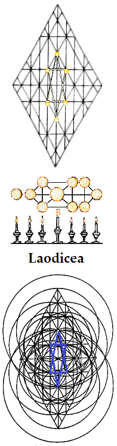
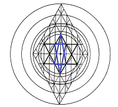

Back in the Wilderness: the Rough Places, Plain
Kether:
The Church at Laodicea
Take my
yoke upon thee, and learn of me.
And unto the angel of the church of the
Laodiceans write; These things saith the Amen, the faithful and true
witness, the beginning of the creation of Elohim; I know thy works, that
thou art neither cold nor hot: I would thou wert cold or hot. So then,
because thou art lukewarm, and neither cold nor hot, I will spew thee
out of my mouth.
Because thou sayest, l am rich, and increased
with goods, and have need of nothing; and knowest not that thou art
wretched, and miserable, and poor, and blind, and naked: I counsel thee
to buy of me gold tried in the fire, that thou mayest be rich; and white
raiment, that thou mayest be clothed, and that the shame of thy
nakedness do not appear; and anoint thine eyes with eye-salve, that thou
mayest see.
As many as I love, I rebuke and chasten: be
zealous therefore, and repent. Behold, I stand at the door, and knock:
if any man hear my voice, and open the door, I will come in to him, and
will sup with him, and he with me.
To him that
overcometh
will I grant to sit with me in my throne, even as I also overcame, and
am set down with my Father in his throne. Hear what the Spirit saith
unto the churches.
{kind=link}
As the monk
approached his destination, the words of the child began repeating
themselves in his mind. The resonance of each repetition gained a little
as he walked-- as though the child's voice first matured, then merged
with other voices: a few, then many; and now, as he stepped into the
open doorway before him, more than his mind could embrace.
"No one wins. No one wins!" The significance of the words changed of
themselves in accompaniment with his reeling thoughts. "No one wins?" It
was as though a multitude were knocking at every opening that could be
occupied by consciousness. He paused upon the threshold a timeless
while, and a new voice he recognized as his own seemed to answer, "We
win as One."
Light surpassing light enfolded him from within, and
all that he had known began to burn-- not as in the raging fires of
Earth, nor even as in the hidden fire of ice: the fire in which he stood
proceeded from itself
and bathed unto transformation, fusing the
purified essence of his former existences in time into an elevated continuation so far beyond his expectations that it appeared as new.
Every expression that had ever crossed his face was there before him,
now, revealed as but a single, smiling appearance of Maya-- Illusion:
his mother to this moment, and his new-found friend.
His body was
being rebuilt, cell by cell. As crystals form, so he grew: his feet and
his abdomen, new; his legs and his lungs, new; his loins and his heart,
new; his shoulders, arms, and his ears, new; his eyes and his hands,
new; his forehead and, yet again, all of him, new: and yet the same!
An ancient writing opened to him: "Neither shalt thou go up by steps
unto mine altar, that thy nakedness be not discovered thereon." His life
to this moment had been like steps inside a prayer wheel, whose turnings
had kept his place in every circumstance. He had not come to an end, nor
even to a new beginning, but to the center!
He reached out his
arms to touch the door posts. They were there, but they were no longer
solid, as at his approach. They rose above him on left and right like
pillars of smoke. He turned his head to follow their trails upward and
was nearly overwhelmed by the shining of the lintel: it was as though he
had come face to face with eternity compacted into a single moment of
time.
He might certainly have fallen, then; but the smallest of
all voices from him who is Least of all invited him to enter. The monk
would not have presumed to ask the question, but it was answered,
nonetheless: "I am that I am."
On the other side, he was seated
in his hut, the many-petal Lotus. His prayer wheel was slowly spinning
in the air around him. Deer were looking in at the window, and he
understood that they were waiting to be fed. He stretched himself to
make certain of this new vision, and his hands were filled, abundantly,
with seed.